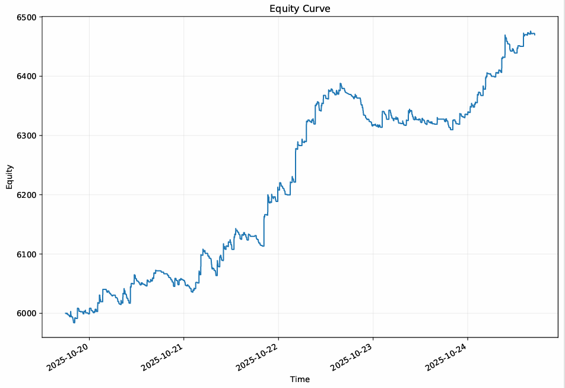

Trading Bots – skrócona dokumentacja
Modułowy ekosystem do badań nad strategiami tradingowymi: ładowanie danych, kontrakt strategii, wektorowy backtest, koszty transakcyjne, metryki ryzyka oraz zestaw testów głębokich (grid search, walk‑forward, permutation test, bootstrap CI). Poniżej znajdziesz bezpieczne próbki kodu, metodologię oraz zrzut equity.
Architektura i przepływ
- Data layer — Yahoo/CSV (TradingView) → walidacja → feature’y bazowe (zwroty)
- Strategy layer — kontrakt: DataFrame → pozycja [-1..1], parametry jako config (bez ujawniania edge’a)
- Backtester — wektorowy PnL, koszty (bps), equity i drawdown
- Deep‑tests — grid search, walk‑forward, test permutacyjny (p‑value), bootstrap CI
- Reporting — metryki: CAGR, Sharpe, Sortino, MaxDD, Calmar, WinRate; wykresy
Próbki kodu (bez ujawniania strategii)
# Strategy contract (Python)
from typing import Dict, Any
import pandas as pd
def strategy_contract(df: pd.DataFrame, params: Dict[str, Any]) -> pd.Series:
"""
Input:
- df: columns >= ['Close', 'RetSimple']
- params: hyperparameters (e.g. windows, thresholds)
Output:
- position Series in [-1..1], index aligned with df.index
"""
pos = pd.Series(0.0, index=df.index)
# ... compute signal safely; do NOT expose edge logic
return pos
# Max drawdown utility
import numpy as np
import pandas as pd
def max_drawdown(equity: pd.Series) -> float:
roll_max = equity.cummax()
dd = equity / roll_max - 1.0
return float(dd.min())
# Vectorized backtest stub
def backtest(df: pd.DataFrame, position: pd.Series, cost_bps: float = 1.0) -> pd.DataFrame:
ret = df['RetSimple'].fillna(0.0)
shift_pos = position.shift().fillna(0.0)
gross = shift_pos * ret
cost = (position.diff().abs().fillna(0.0)) * (cost_bps / 10000.0)
net = gross - cost
equity = (1.0 + net).cumprod()
return pd.DataFrame({'ret_net': net, 'equity': equity})
Powyższe fragmenty pokazują interfejsy i narzędzia — bez konkretnych reguł wejścia/wyjścia.
Wyniki (snapshot)

OB Reverse Pullback — Summary
Data: 2025‑10‑19 18:00:00‑04:00 → 2025‑10‑24 16:59:00‑04:00 (6816 rows)
- sw: 5
- bos_break_bps: 0.0
- ob_zone_type: full
- ob_buffer_bps: 0.0
- entry_pct: 0.6
- CAGR: 977.4283632559337
- Sharpe: 0.5425095605064917
- Sortino: 2.1310717612579833
- Vol: 0.005163749771286614
- MaxDD: -0.012254128581817292
- MaxDD_Days: 2071.0
- Calmar: 0.22860733022312174
- WinRate: 0.22020725388601037
- AvgWin: 0.0012775024227172536
- AvgLoss: -0.00023489145334664528
- Trades: 772.0
Uwaga: powyższe to snapshot backtestu z 5 dni; pełna metodologia w sekcji poniżej.
Metodologia i rzetelność testów
- Walk‑forward — okna train/test dla walidacji czasowej; unikanie data leakage
- Koszty i slippage — model bps, wpływ na equity i metryki
- Permutation test — p‑value względem reshuffle w blokach
- Bootstrap CI — przedziały ufności dla CAGR/MaxDD
Adnotacja
Projekt został zrealizowany z pomocą narzędzi AI (asysta w projektowaniu, kodzie i dokumentacji). Wszystkie kluczowe elementy zostały przeze mnie zweryfikowane i zintegrowane.